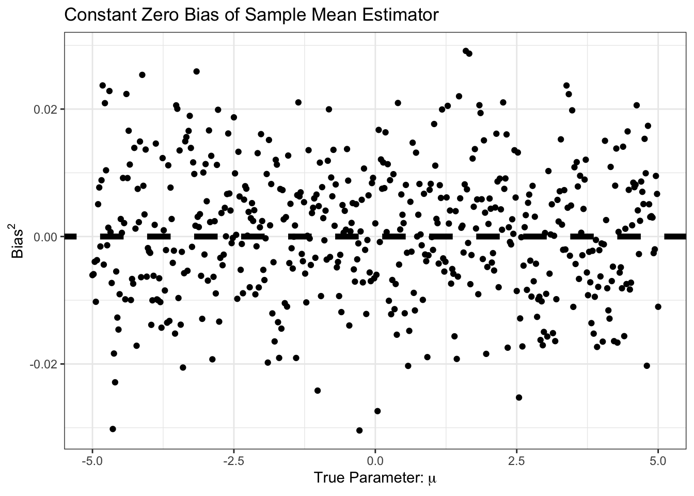
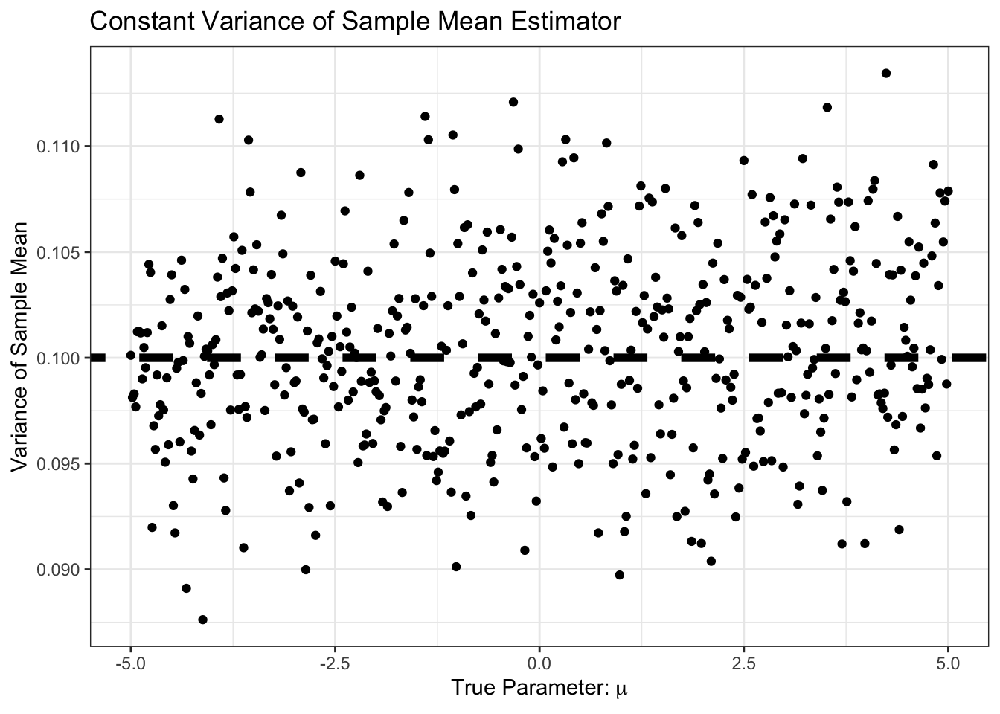
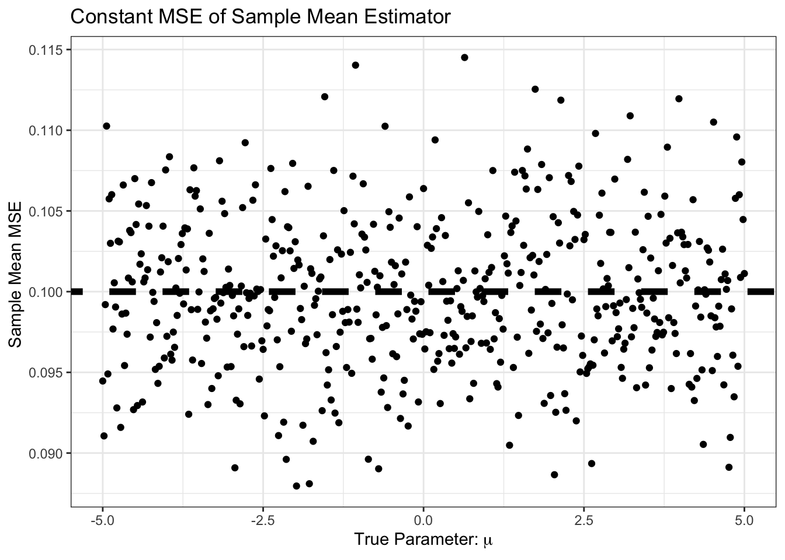
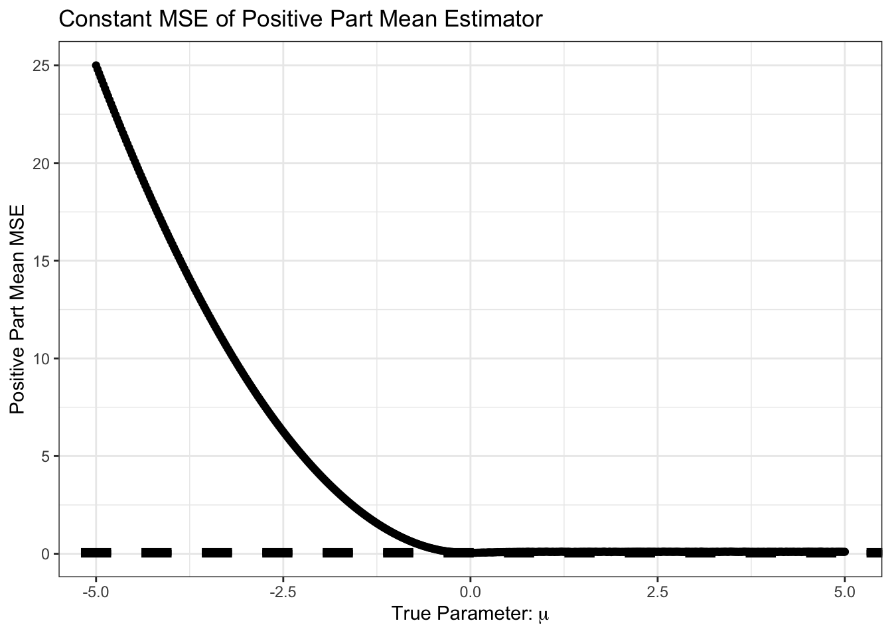
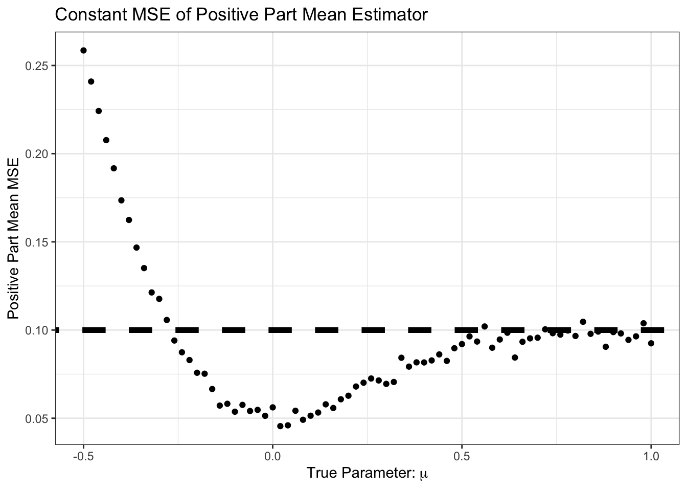
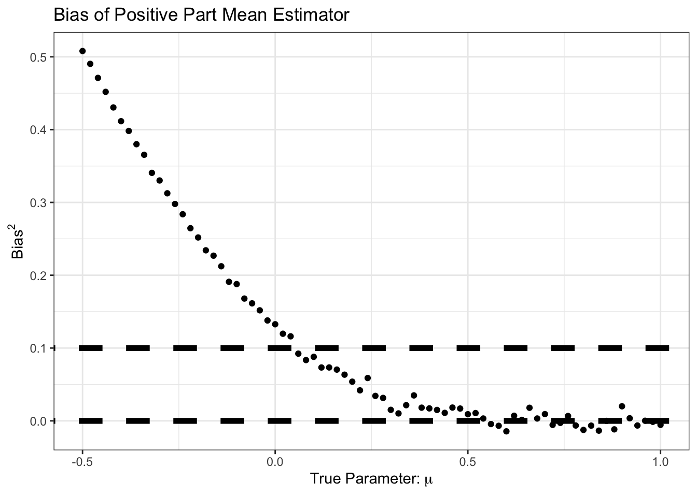
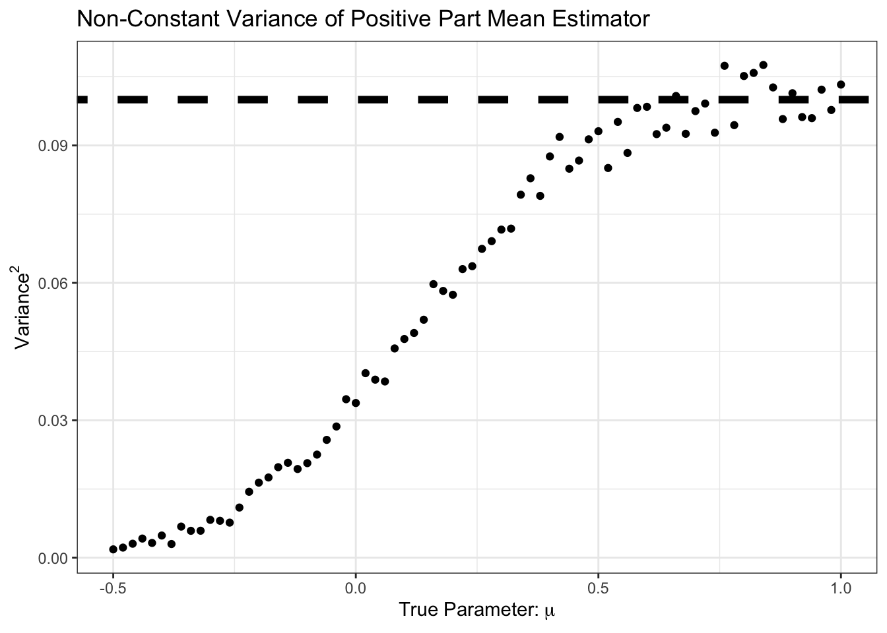
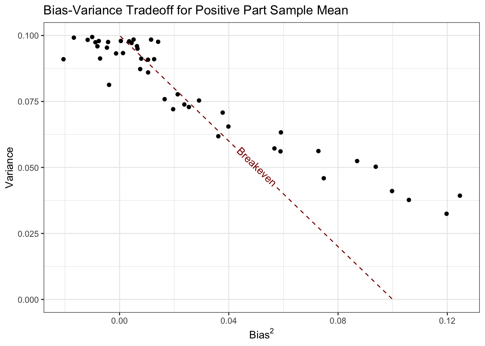
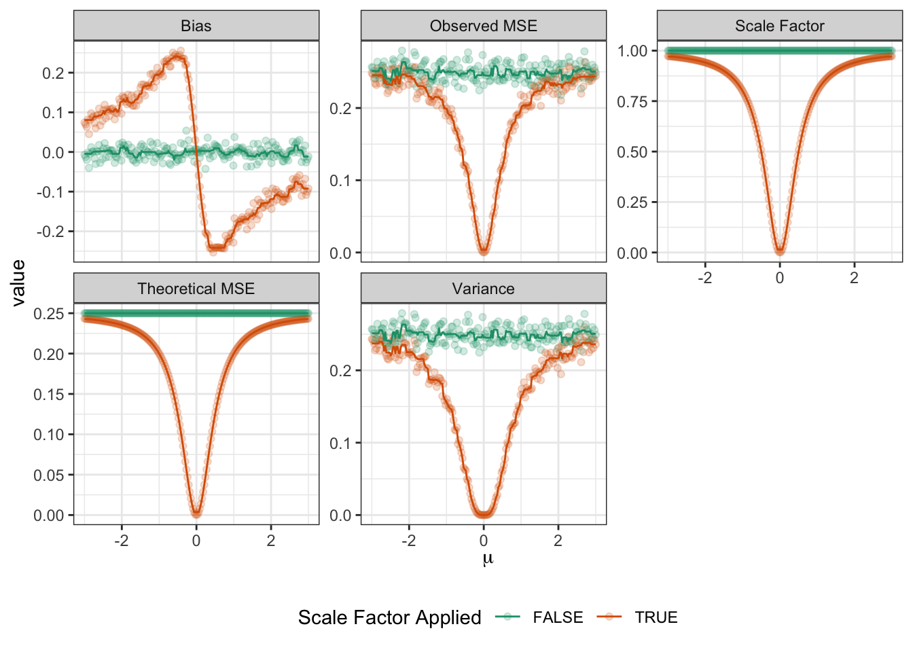

STA 9890 - Supervised Learning: I. Regularization & Shrinkage
\[\newcommand{\R}{\mathbb{R}} \newcommand{\E}{\mathbb{E}} \newcommand{\V}{\mathbb{V}} \newcommand{\P}{\mathbb{P}} \newcommand{\C}{\mathbb{C}} \newcommand{\bbeta}{\mathbb{\beta}} \newcommand{\bone}{\mathbb{1}} \newcommand{\bzero}{\mathbb{0}} \newcommand{\ba}{\mathbf{a}} \newcommand{\bb}{\mathbf{b}} \newcommand{\bc}{\mathbf{c}} \newcommand{\br}{\mathbf{r}} \newcommand{\bw}{\mathbf{w}} \newcommand{\bx}{\mathbf{x}} \newcommand{\by}{\mathbf{y}} \newcommand{\bz}{\mathbf{z}} \newcommand{\bX}{\mathbf{X}} \newcommand{\bA}{\mathbf{A}} \newcommand{\bB}{\mathbf{B}} \newcommand{\bC}{\mathbb{C}} \newcommand{\bD}{\mathbb{D}} \newcommand{\bU}{\mathbb{U}} \newcommand{\bV}{\mathbb{V}} \newcommand{\bI}{\mathbb{I}} \newcommand{\bH}{\mathbb{H}} \newcommand{\bW}{\mathbb{W}} \newcommand{\bK}{\mathbb{K}} \newcommand{\argmin}{\text{arg\,min}} \newcommand{\argmax}{\text{arg\,max}} \newcommand{\MSE}{\text{MSE}} \newcommand{\Fcal}{\mathcal{F}} \newcommand{\Dcal}{\mathcal{D}} \newcommand{\Ycal}{\mathcal{Y}} \]
We previously showed the following:
- OLS can be derived purely as a ‘loss minimization’ problem without reference to specific probabilistic models; this is an instance of the general strategy of empirical risk management
- OLS is a convex problem, making it particularly easy to solve even if we don’t use the closed-form solution
- The BLUE property of OLS is perhaps less interesting than it sounds as it requires very strong assumptions on the data generating process which are unlikely to hold in practice
- MSE, the loss we used to pose OLS, can be decomposed as \(\text{Bias}^2 + \text{Variance}\)
- Because BLUE restricts to unbiased estimators, the MSE of OLS is all variance
We begin this week by asking if we can do better than OLS. To keep things simple, we begin by assuming we are under a linear DGP (so no ‘model error’) but that’s only a mathematical niceity. It’s not something you should always assume - in fact, it is really more important to think about how models do on non-linear DGPs. As we will see, it may still be useful to use linear models…
Because OLS is BLUE under our assumptions, we know that we need to relax one or more of our assumptions to beat it. For now, we will focus on relaxing the U - unbiasedness; non-linear methods come later in this course.
Recalling our decomposition:
\[\MSE = \text{Bias}^2 + \text{Variance}\]
Our gambit is that we can find an alternative estimator with a bit more bias, but far less variance. Before we attempt to do so for linear regression, let’s convince ourselves this is possible for a much simpler problem - estimating means.
Estimating Normal Means
Suppose we have data from a distribution \[X_i \buildrel \text{iid} \over \sim \Ncal(\mu, 1)\] for some unknown \(\mu\) that we seek to estimate. Quite reasonably, we might use the sample mean \[\overline{X}_n = \frac{1}{n}\sum_{i=1}^n X_i\] to estimate \(\mu\). Clearly, this is an unbiased estimator and it has variance given by \(1/n\), which isn’t bad. In general, it’s pretty hard to top this.
We can verify all of this empirically:
compute_mse_sample_mean <- function(mu, n){
# Compute the MSE estimating mu
# with the sample mean from n samples
# We repeat this process a large number of times
# to get the expected MSE
R <- replicate(1000, {
X <- rnorm(n, mean=mu, sd=1)
mean(X)
})
data.frame(n=n,
mu=mu,
bias=mean(R - mu),
variance=var(R),
mse=mean((R - mu)^2))
}
MU_GRID <- seq(-5, 5, length.out=501)
N <- 10
SIMRES <- map(MU_GRID, compute_mse_sample_mean, n=N) |> list_rbind()Our bias is essentially always zero:
library(patchwork)
p1 <- ggplot(SIMRES, aes(x=mu, y=bias)) +
geom_point() +
geom_abline(slope=0,
intercept=0,
color="black",
lwd=2,
lty=2) +
xlab(expression("True Parameter:" ~ mu)) +
ylab(expression("Bias")) +
ggtitle("Constant Zero Bias of Sample Mean Estimator") +
theme_bw()
p2 <- ggplot(SIMRES, aes(x=mu, y=bias^2)) +
geom_point() +
geom_abline(slope=0,
intercept=0,
color="black",
lwd=2,
lty=2) +
xlab(expression("True Parameter:" ~ mu)) +
ylab(expression("Bias"^2)) +
ggtitle("Constant Zero Bias of Sample Mean Estimator") +
theme_bw()
p1 + p2
Similarly, our bias is small, and constant. Specifically, it is around \(1/n\) as predicted by standard theory:
ggplot(SIMRES, aes(x=mu, y=variance)) +
geom_point() +
geom_abline(intercept=1/N,
slope=0,
color="black",
lwd=2,
lty=2) +
xlab(expression("True Parameter:" ~ mu)) +
ylab("Variance of Sample Mean") +
ggtitle("Constant Variance of Sample Mean Estimator") +
theme_bw()
As expected, the MSE is the sum of bias and variance, so it’s basically just variance here:
ggplot(SIMRES, aes(x=mu, y=mse)) +
geom_point() +
geom_abline(intercept=0,
slope=0,
color="black",
lwd=2,
lty=2) +
geom_abline(intercept=1/N,
slope=0,
color="black",
lwd=2,
lty=2) +
xlab(expression("True Parameter:" ~ mu)) +
ylab("Sample Mean MSE ") +
ggtitle("Constant MSE of Sample Mean Estimator") +
theme_bw()Warning: Removed 1 row containing missing values or values outside the scale range
(`geom_segment()`).
So far, it looks like the sample mean is hard to beat. In particular, this curve is But… what if we know, e.g., that \(\mu\) is positive. We might still use the sample mean, but with the additional step that we set it to zero if the sample mean looks negative. That is, our new estimator is \[\hat{\mu} = (\overline{X}_n)_+ \text{ where } z_+ = \begin{cases} z & z > 0 \\ 0 & z \leq 0 \end{cases}\]
The \((\cdot)_+\) operator is known as the positive-part. How does this \(\hat{\mu}\) do?
pospart <- function(x) ifelse(x > 0, x, 0)
compute_mse_positive_mean <- function(mu, n){
# Compute the MSE estimating mu
# with the positive part of the sample mean from n samples
# We repeat this process a large number of times
# to get the expected MSE
R <- replicate(1000, {
X <- rnorm(n, mean=mu, sd=1)
pospart(mean(X))
})
data.frame(n=n,
mu=mu,
bias=mean(R - mu),
variance=var(R),
mse=mean((R - mu)^2))
}
SIMRES_POSPART <- map(MU_GRID, compute_mse_positive_mean, n=N) |>
list_rbind()ggplot(SIMRES_POSPART, aes(x=mu, y=mse)) +
geom_point() +
geom_abline(intercept=0,
slope=0,
color="black",
lwd=2,
lty=2) +
geom_abline(intercept=1/N,
slope=0,
color="black",
lwd=2,
lty=2) +
xlab(expression("True Parameter:" ~ mu)) +
ylab("Positive Part Mean MSE") +
ggtitle("Constant MSE of Positive Part Mean Estimator") +
theme_bw()
Not surprisingly, we do very poorly if we are estimating a negative \(\mu\) but we assume it is positive. Let’s zoom in on the area near 0 however.
SIMRES_POSPART |>
filter(mu >= -0.5,
mu <= 1) |>
ggplot(aes(x=mu, y=mse)) +
geom_point() +
geom_abline(intercept=0,
slope=0,
color="black",
lwd=2,
lty=2) +
geom_abline(intercept=1/N,
slope=0,
color="black",
lwd=2,
lty=2) +
xlab(expression("True Parameter:" ~ mu)) +
ylab("Positive Part Mean MSE") +
ggtitle("Constant MSE of Positive Part Mean Estimator") +
theme_bw()
Interesting! For some of these values, we do better than the sample mean.
In particular, we do better in the following scenario:
- True mean is positive
- Sample mean is negative
- Positive part of sample mean is zero, so closer than pure sample mean
The probability of step 2 (sample mean is negative) is near zero for large \(\mu\), but for \(\mu\) in the neighborhood of zero, it can happen.
Review Question: As a function of \(\mu\), what is the probability that \(\overline{X}_n\) is negative? You can leave your answer in terms of the standard normal CDF \(\Phi(\cdot)\).
This is pretty cool. We have made an additional assumption and, when that assumption holds, it helps us or, worst case, doesn’t really hurt us much. Of course, when the assumption is wrong (\(\mu < 0\)), we do much worse, but we can’t really hold that against \((\overline{X}_n)_+\).
Looking more closely, we can look at the bias of \((\overline{X}_n)_+\):
SIMRES_POSPART |>
filter(mu >= -0.5,
mu <= 1) |>
ggplot(aes(x=mu, y=bias)) +
geom_point() +
geom_abline(intercept=0,
slope=0,
color="black",
lwd=2,
lty=2) +
geom_abline(intercept=1/N,
slope=0,
color="black",
lwd=2,
lty=2) +
xlab(expression("True Parameter:" ~ mu)) +
ylab(expression("Bias")) +
ggtitle("Bias of Positive Part Mean Estimator") +
theme_bw()
We see here that our improvement came at the cost of some bias, particularly in the \(\mu \in [0, 1]\) range. But for that bias, we see a good reduction in variance:
SIMRES_POSPART |>
filter(mu >= -0.5,
mu <= 1) |>
ggplot(aes(x=mu, y=variance)) +
geom_point() +
geom_abline(intercept=1/N,
slope=0,
color="black",
lwd=2,
lty=2) +
xlab(expression("True Parameter:" ~ mu)) +
ylab(expression(Variance^2)) +
ggtitle("Non-Constant Variance of Positive Part Mean Estimator") +
theme_bw()
Here, we see that the variance is less than \(1/n\) from \(\mu \approx 0.5\) and down. Let’s plot variance and bias against each other:
library(geomtextpath)
SIMRES_POSPART |>
filter(mu >= 0,
mu <= 1) |>
ggplot(aes(x=bias, y=variance)) +
geom_point() +
geom_textline(aes(x=bias^2, y=1/n - bias^2),
lty=2, color="red4",
label="Breakeven") +
ylim(c(0, 0.1)) +
theme_bw() +
xlab(expression("Bias"^2)) +
ylab("Variance") +
ggtitle("Bias-Variance Tradeoff for Positive Part Sample Mean")
Here, all of the values of \(\mu\) corresponding to points below this line are points where the positive part estimator does better than the standard sample mean.
See if you can compute the bias and variance of \((\overline{X}_n)_+\) in closed form. The moments of the Rectified Normal Distribution may be of use.
Ok - now let’s start to generalize. Clearly, the first step is to change the ‘positive’ assumption. The easiest generalization is to restrict \(\mu\) to an interval \([a, b]\). In this case, it makes sense to replace the positive part operator with a ‘clamp’ operator:
\[(x)_{[a, b]} = \begin{cases} a & x \leq a \\ x & x\in(a, b) \\ b & x \geq b \end{cases}\]
The positive part operator we applied before is \((x)_+ = (x)_{[0, \infty)}\).
Extend the simulation above to characterize the estimation performance (bias and variance) of \((\overline{X}_n)_[a, b]\).
A particularly useful version of this bound is taking \((\overline{X}_n)[-\beta, +\beta]\); that is, we don’t know the sign of \(\mu\), but we know it is less than \(\beta\) in magnitude. This is not an improbable assumption - we often have a good sense of the plausible magnitude of a parameter (Bayesian priors anyone?) - but it feels a bit ‘firm’. Can we relax this sort of assumption? We want \(\mu\) to be ‘not too big’, but we’re willing to go big if the data takes us there.
We can implement this as follows:
\[\hat{\mu}_{\alpha} = \frac{\overline{X}_n}{1+\alpha}\]
Clearly, setting \(\alpha = 0\) gets us back to the standard sample mean. Can this be better than the sample mean? Let’s do the calculations by hand. First we note that \(\E[\hat{\mu}_{\alpha}] = \frac{\mu}{1+\alpha}\) giving a bias of \[\text{Bias} = \E[\hat{\mu}_{\alpha}] - \mu = \mu\left(1 - \frac{1}{1+\alpha}\right) \implies \text{Bias}^2 = \mu^2\left(1 - \frac{1}{1+\alpha}\right)^2\] and
\[\text{Variance} = \V[\hat{\mu}_{\alpha}] = \frac{1}{(1+\alpha)^2}\V[\overline{X}_n] = \frac{1}{n(1+\alpha)^2}\]
so the total MSE is given by
\[\begin{align*} \MSE &= \E[(\hat{\mu}_{\alpha} - \mu)^2] \\ &= \text{Bias}^2 + \text{Variance} \\ &= \mu^2\left(1 - \frac{1}{1+\alpha}\right)^2 + \frac{1}{n(1+\alpha)^2} \end{align*}\]
For suitable \(\alpha, n\) this can be less than the standard MSE of \(1/n\). For instance, at \(\mu = 5\) and \(n = 10\),
shrunk_mean_mse <- function(mu, n, alpha){
mu^2 * (1 - 1/(1+alpha))^2 + 1/(n * (1+alpha)^2)
}
shrunk_mean_mse(5, 10, 1e-4)[1] 0.09998025Not great - but an improvement! It’s actually pretty hard to beat the sample mean with an estimator of this form in the univariate case, but it can be incredibly useful in more general settings.
Let’s actually take some time and work this out formally in one dimension: suppose we have \(n\) IID samples from a distribution with mean \(\mu\) and variance \(\sigma^2\). The natural estimator of \(\mu\) is the sample mean
\[\hat{\mu} = \frac{1}{n}\sum_{i=1}^n X_i\]
It is easy to see that this estimator is unbiased:
\[\E[\hat{\mu}] = \E\left[\frac{1}{n}\sum_{i=1}^n X_i\right] = \frac{1}{n}\sum_{i=1}^n \E[X_i] = \frac{1}{n}\sum_{i=1}^n \mu = \mu \text{ for all } \mu\] and the variance follows the usual \(1/n\) pattern:
\[\V[\hat{\mu}] = \V\left[\frac{1}{n}\sum_{i=1}^n X_i\right] = \frac{1}{n^2}\sum_{i=1}^n \V[X_i] = \frac{1}{n^2}\sum_{i=1}^n \sigma^2 = \frac{\sigma^2}{n} \text{ for all } \sigma^2, n\]
so the MSE associated with this estimator is:
\[\MSE(\hat{\mu}) = \text{Bias}^2 + \text{Variance} = \frac{\sigma^2}{n}\]
Let’s compare this to a ‘scaled’ estimator
\[\hat{\mu}_{\alpha} = \alpha \hat{\mu} = \frac{\alpha}{n}\sum_{i=1}^n \] This estimator is no longer unbiased:
\[\text{Bias}(\hat{\mu}_{\alpha}) = \E[\hat{\mu}_{\alpha}] - \mu = \E[\alpha\hat{\mu}] - \mu = \alpha\E[\hat{\mu}] - \mu = \alpha \mu - \mu = \mu(1-\alpha) \neq 0\]
The variance is
\[\V[\hat{\mu}_{\alpha}] = \V[\alpha \hat{\mu}] = \alpha^2 \V[\hat{\mu}] = \frac{\alpha^2\sigma^2}{n}\]
These two expressions are interesting: the (squared) bias has clearly increased above our initial value of 0, but the variance has gone down by a factor of \(1 - \alpha^2\). Is there a range of values where this represents an MSE-improvement?
\[\begin{align*} \MSE(\hat{\mu}_{\alpha}) &= \text{Bias}(\hat{\mu}_{\alpha})^2 + \V[\hat{\mu}_{\alpha}] \\ &= \mu^2(1-\alpha)^2 + \frac{\alpha^2\sigma^2}{n} \end{align*}\]
This is a quadratic in \(\alpha\) (and upward facing / convex), so we know it will have a unique minimizer. It is unclear whether that minimizer is actually at \(\alpha = 1\) (the ‘normal’ sample mean).
Let’s take the derivative and set it equal to 0: \[\begin{align*} \frac{\partial}{\partial \alpha}\MSE(\hat{\mu}_{\alpha}) &= \frac{\partial}{\partial \alpha}\left[\mu^2(1-\alpha)^2 + \frac{\alpha^2\sigma^2}{n}\right] \\ 0 &= -2\mu^2(1-\alpha) + \frac{2\alpha\sigma^2}{n} \\ &= -\mu^2 +\alpha\left(\frac{\sigma^2}{n} + \mu^2\right) \\ \implies \alpha_* &= \frac{\mu^2}{\mu^2 + \sigma^2/n} \end{align*}\]
You can substitute this back into the MSE formula from above to get the MSE at \(\alpha^*\) or recall a basic set of facts about univariate quadratics:
\[\begin{align*} f(x) &= ax^2 + bx + c \\ \implies x_* &= -\frac{b}{2a} \tag{Minimizer} \\ f(x_*) &= c - \frac{b^2}{4a} \tag{Minimum} \end{align*}\]
If we expand the MSE expression into this form:
\[\begin{align*} \MSE(\hat{\mu}_{\alpha}) &= \mu^2(1-\alpha)^2 + \frac{\alpha^2\sigma^2}{n} \\ &= \mu^2 - 2\mu^2\alpha + \mu^2\alpha^2 + \frac{\alpha^2\sigma^2}{n} \\ &= \underbrace{\left(\mu^2 + \frac{\sigma^2}{n}\right)}_a\alpha^2 -\underbrace{2\mu^2}_b \alpha + \underbrace{\mu^2}_c \end{align*}\]
so we have a minimum possible MSE of:
\[\begin{align*} \MSE^* &= c - \frac{b^2}{4a} \\ &= \mu^2 - \frac{(-2\mu^2)^2}{4\left(\mu^2 + \frac{\sigma^2}{n}\right)} \\ &= \mu^2 - \frac{4\mu^4}{4(\mu^2 + \sigma^2/n)} \\ &= \mu^2 - \frac{\mu^4}{\mu^2 + \sigma^2/n} \\ &= \mu^2 - \frac{\mu^2}{\mu^{-2}(\mu^2 + \sigma^2/n)} \\ &= \mu^2 - \frac{\mu^2}{1 + (\sigma/\mu)^2/n} \\ &= \mu^2\left(1-\frac{\mu^2}{1 + (\sigma/\mu)^2/n}\right) \end{align*}\]
Whew! That was a lot of algebra. Let’s do a quick check to make sure this actually holds. Without loss of generality, let’s take \(\sigma^2 = 1\) and \(n = 4\) and vary \(\mu\):
MU_GRID <- seq(-3, 3, length.out=201)
SIM_RESULTS <- map(MU_GRID, \(mu){
replicate(1000, {
n <- 4
sd <- 1
X <- rnorm(n=n, mean=mu, sd=sd)
mu_hat <- mean(X)
alpha_star <- mu^2/(mu^2 + sd^2/length(X))
mu_hat_alpha <- alpha_star * mu_hat
data.frame(mu=mu,
n=n,
sigma=sqrt(sd),
alpha_shrink = alpha_star,
alpha_no_shrink = 1,
mu_hat_shrink = mu_hat_alpha,
mu_hat_no_shrink = mu_hat,
theory_mse_shrink = mu^2 - mu^4 / (mu^2 + sd^2/n),
theory_mse_no_shrink = sd^2/n)
}, simplify=FALSE) |> bind_rows()
}) |> bind_rows()
SIM_RESULTS |>
mutate(err_shrink = mu_hat_shrink - mu,
err_no_shrink = mu_hat_no_shrink - mu,
err2_shrink = err_shrink^2,
err2_no_shrink = err_no_shrink^2) |>
group_by(mu) |>
mutate(var_shrink = var(err_shrink),
var_no_shrink = var(err_no_shrink)) |>
select(-mu_hat_shrink, -mu_hat_no_shrink, -n, -sigma) |>
summarize(across(everything(), mean)) |>
pivot_longer(cols=-mu,
names_to="metric",
values_to="value") |>
mutate(scaling = !str_detect(metric, "no_shrink"),
facet_name = case_when(
str_detect(metric, "var") ~ "Variance",
str_detect(metric, "alpha") ~ "Scale Factor",
str_detect(metric, "theory") ~ "Theoretical MSE",
str_detect(metric, "err2") ~ "Observed MSE",
str_detect(metric, "err") ~ "Bias"
)) |>
group_by(scaling, facet_name) |>
mutate(value_smooth = runmed(value, k=9, endrule="constant")) |>
ggplot(aes(x=mu, color=scaling)) +
geom_point(aes(y=value), alpha=0.2) +
geom_line(aes(y=value_smooth)) +
theme_bw() +
theme(legend.position="bottom") +
xlab(expression(mu)) +
facet_wrap(~facet_name, scales="free_y") +
scale_color_brewer(type="qual",
palette=2,
name="Scale Factor Applied")
Lots of interesting things here:
- Both the theoretical and the actual MSE of the unscaled (plain sample mean) estimator are basically constant and does not depend on \(\mu\). (Fluctuations in observed MSE are due to sample randomness.) This makes sense as the sample mean is location invariant.
TODO
James-Stein Estimation of Multivariate Normal Means
TODO